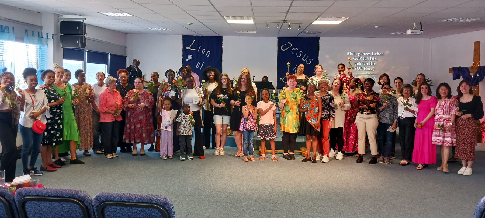
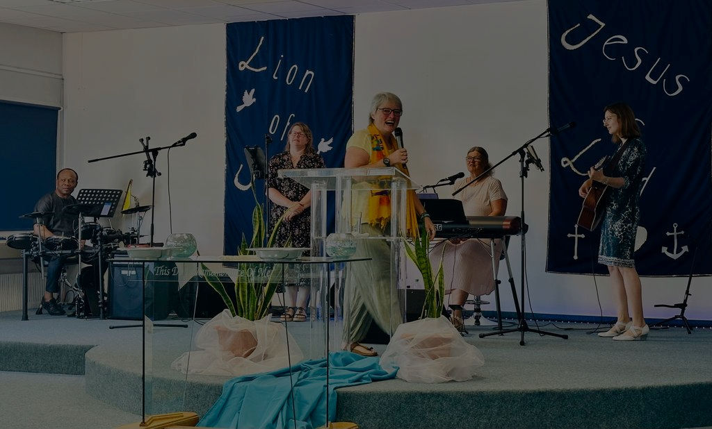
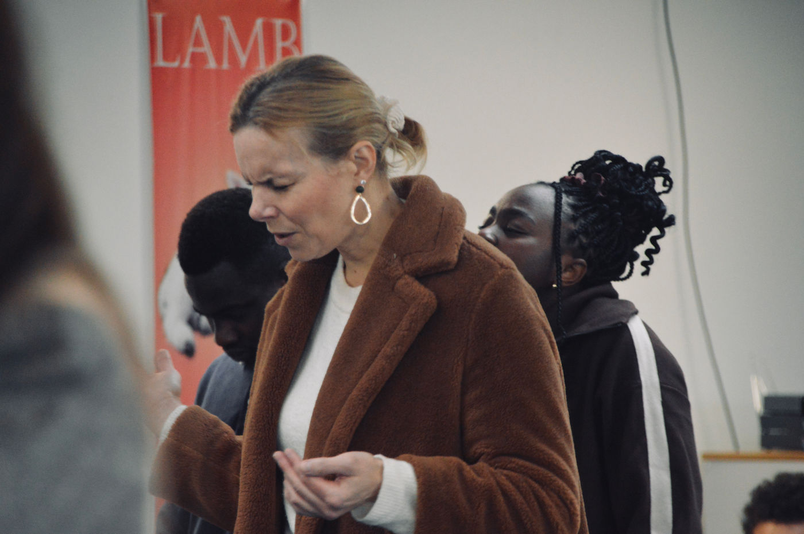

Jeder findet seinen Platz.
Im Freedom Worship Center findet jeder bereitwillige Mensch seinen Platz, um zu dienen und Teil dessen zu sein, was Gott tut.

Kinderkirche.
Kinder sind eine unserer Prioritäten. Jeden Sonntag gibt es biblische Lektionen mit Aktivitäten, die Spaß machen – in eigenen Gruppen für 5–8 und 9–12 Jahre.
- Singen, tanzen, beten und Gott mit eigenen Worten loben
- Am letzten Sonntag im Monat: Filme, Basteln oder ein kleines Sportfest
- 2–3 Mal im Jahr gestalten die Kinder etwas im Gottesdienst mit
Leitung: Jacky Eseka & Marie Ködel

Chosen Generation.
Junge Menschen, die sich nach Gottes Gegenwart sehnen und ihre Welt mit dem Feuer seines Geistes prägen wollen (Joel 2,28).
Jeden Dienstag um 19:30 Uhr auf Zoom und jeden 2. Dienstag im Monat um 18:30 Uhr live in der Kirche.

Im Lobpreis liegt Macht.
„Gott wohnt im Lobpreis seines Volkes“ (Ps 22,3). Unser Lobpreis- und Anbetungsteam – Keyboard, Schlagzeug, Gitarre, Bass und Gesang – führt die Gemeinde in die Gegenwart Gottes.
Das Team probt jeden Freitag. Wir singen auf Englisch und Deutsch. Leitung: Francis Aigbe.

Team F.
Wir dienen Paaren, Familien und Singles – in der Überzeugung, dass starke Familien die Grundlage für starke Gemeinschaften sind.
- Paararbeit: Ehe-Abende und Workshops zu Kommunikation
- Familienunterstützung: Erziehungsseminare und Familienaktionen
- Singles: für ein zielgerichtetes, geistliches Leben
- Monatliche Treffen, Mentoring und Einkehrtage

Wir glauben an die Kraft des Gebets.
Unser DWJD-Team („Do What Jesus Did“) unter der Leitung von Ulrike Sauer betet mit dir – für körperliche Heilung und für die Heilung der Seele. Seelsorge und Gebet gehen dabei Hand in Hand.
Gemeinsam unterwegs.
Frauendienst
Jeden 4. Freitag im Monat in der Kirche: gemeinsam Gottes Wort studieren, meist in thematischen Reihen.
Männerdienst
Jeden 3. Freitag im Monat: Themen, die ermutigen und aufrichten, damit wir die Männer werden, zu denen Gott uns beruft.

Straßenevangelisation
Einmal im Monat an einem Samstag gehen wir in die Stadt, um die gute Botschaft zu teilen. Komm mit!
Werde Teil des Teams.
Gastgeberteam bei der Kaffeezeit, Begrüßung, Medien, Lobpreis, Kinderkirche – sprich uns an, wir helfen dir, deinen Platz zu finden.